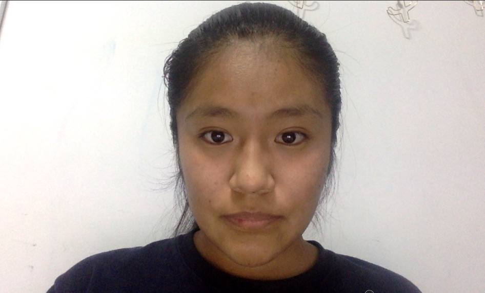

Hello, my name is Hyerin and I just graduated high school. We created this project because of our concern about the environment. COVID-19 has made us realize that it is really humans who are destroying the environment, so we wanted to make this project to show how people can contribute to the betterment of our society and be part of the solution to problems. I coded the interactive lesson and the quiz. I hope you enjoy our website!
Pranav Harwadekar
Hello, my name is Pranav and I am a high school sophomore. Over the years, I have learnt just how important it is to help our environment. The increasing damage to our one and only home, the Earth, is not only bad for us, humans, but causes major damage to the Earth's biodiversity. With the help of this website, we hope more people understand the severity of these issue and start to make a positive impact in world. We only have one Earth and it is up to us to take care of it.

Ana Ramos De Jesus
Hello, my name is Ana and I am a high school senior. My intention in creating this project stems from my experience collecting bottles and cans in my neighborhood. It is unfortunate to see how COVID-19 has filled the streets of my neighborhood with used masks and gloves. It is in everyone's best interest that we keep our world clean and doing our part to learn how to care for the environment and what affects it. I hope you find our website useful and engaging.